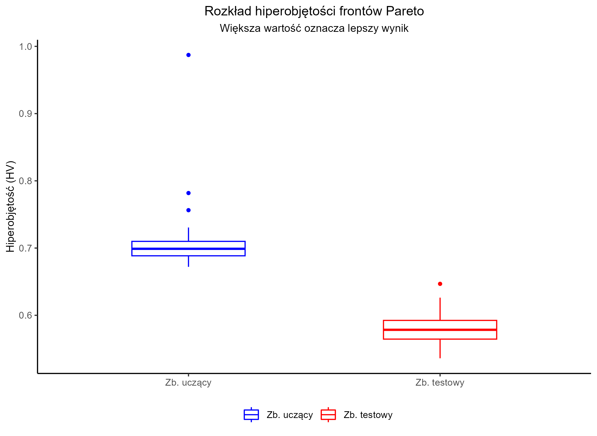
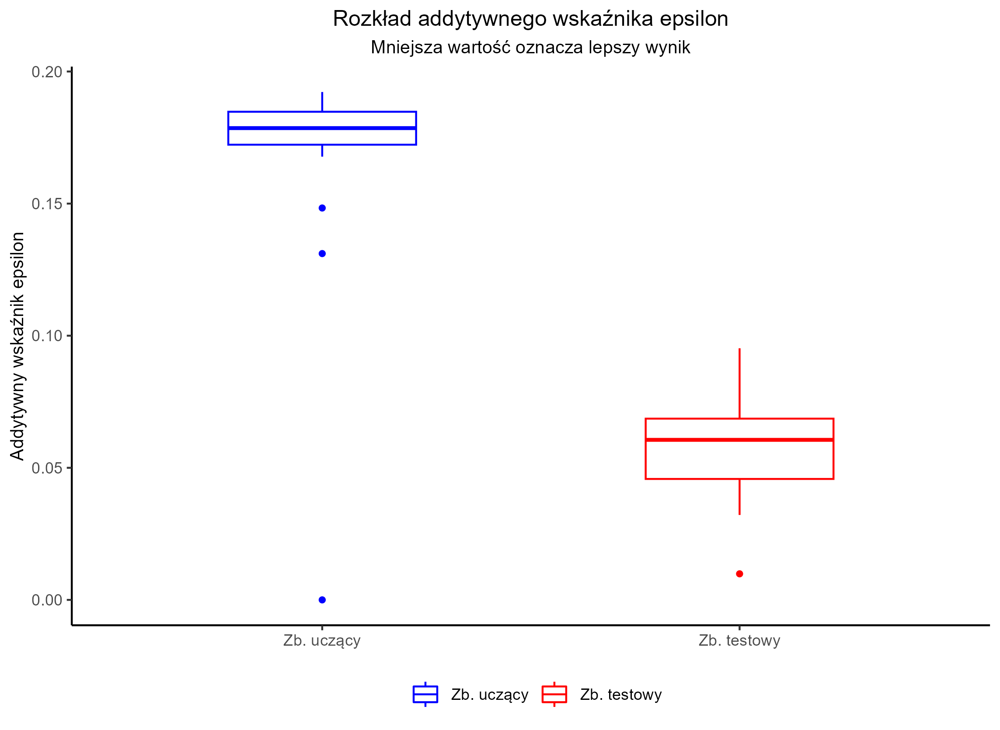
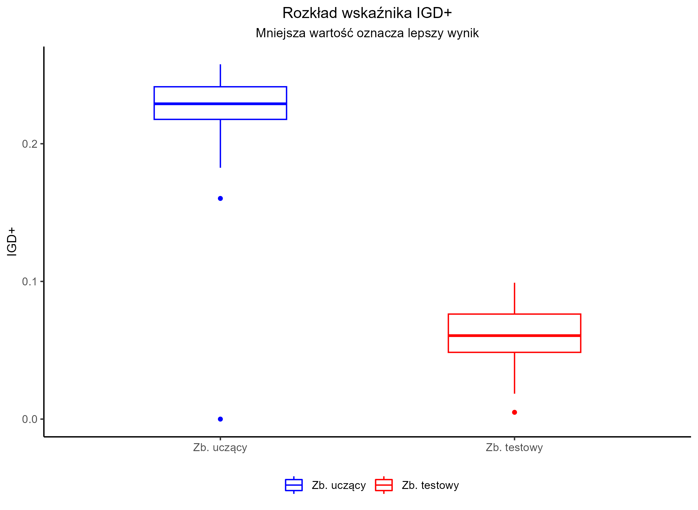
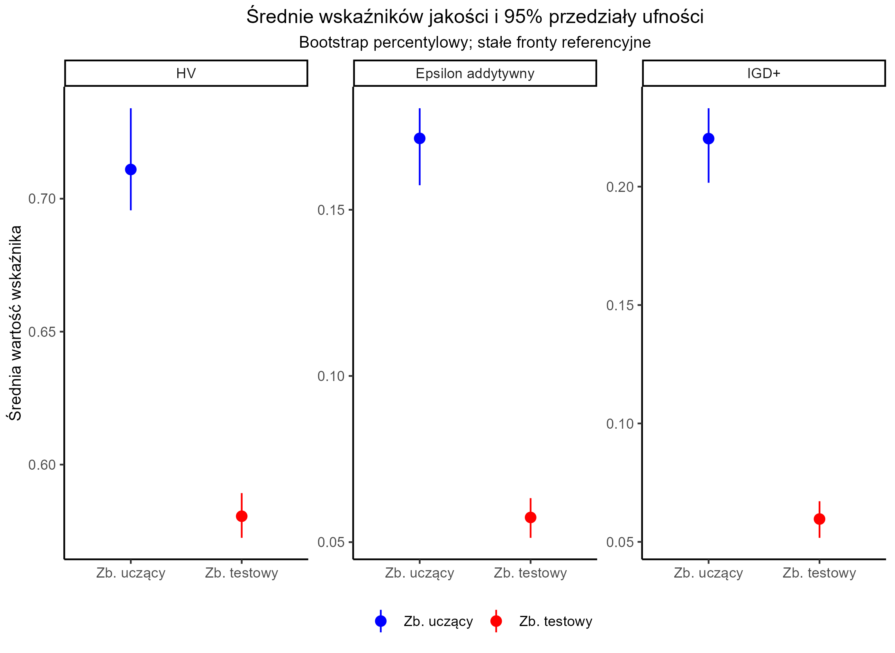
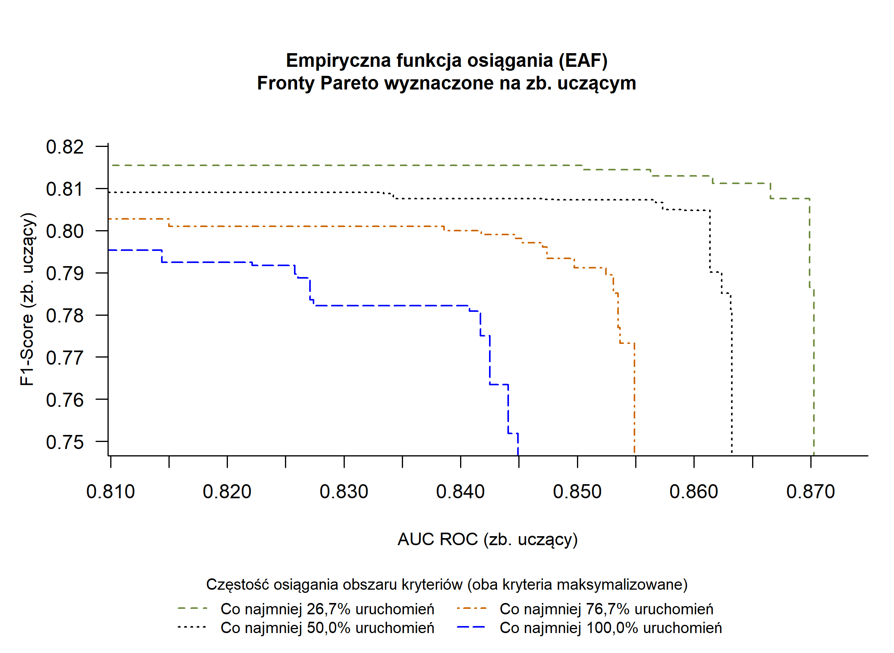
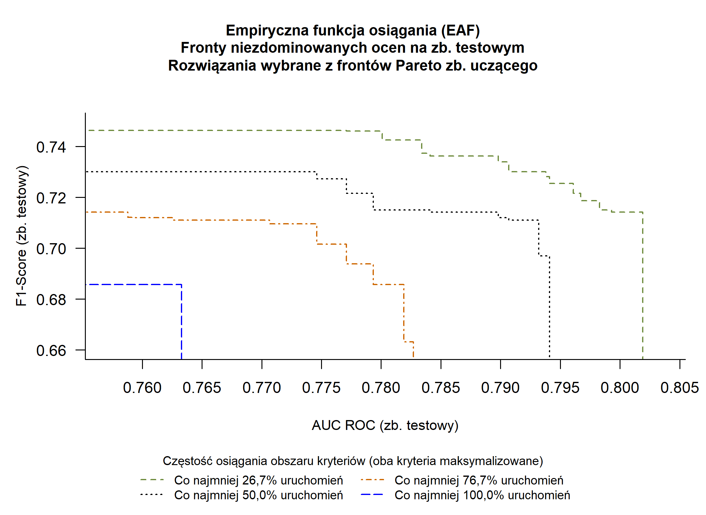

Eksperyment nr 12
Analiza powtarzalności wyników metody CENA
Konfiguracja eksperymentu
| Konfiguracja | konfiguracja (eksperyment 3) |
|---|---|
| Zbiór danych | German Credit Data |
| liczba obserwacji | zbiór uczący: 400 zbiór testowy: 200 |
| Liczba epok | 250 |
| Kryterium | Ocena wielokryterialna oparta o:
|
| Ziarno generatora liczb losowych | Wyświetl wszystkie 30 ziaren19051458151274352478145983050165838493215170139401412149525137398862012985224431605733008348478891124831358320502609121708023605431322726469493427159456572949763573315457963762102543555194855531818489782062105783703174103264515514430311883916292397762576140302292717265073061427266558393789270 |
Zakres analizy
- poniższa analiza ma pomóc ocenić powtarzalność wyników uzyskanych za pomocą metody CENA;
- eksperyment polegał na 30-krotnym uruchomieniu konfiguracji Eksperymentu 3 dla 250 epok;
Sposób przetwarzania danych
- dla każdego z uruchomień skonstruowano zbiór niezdominowany ze wszystkich ocen klasyfikatorów na zb. uczącym. Dla klasyfikatorów, których oceny należą do wspomnianego zbioru stworzono zbiór niezdominowany z ich ocen na zbiorze testowym;
- zastosowanymi współczynnikami jakości były: hypervolume [2], ε addytywny [3], IGD+, empiryczną funkcję osiągalności EAF [5];
- ze wszystkich zbiorów niezdominowanych na zb. uczącym utworzono front referencyjny na zb. uczącym; Jest on frontem referencyjnym dla dla wskaźników: IGD+ oraz ε addytywnego;
- ze wszystkich zbiorów niezdominowanych na zb. testowym utworzono front referencyjny na zb. testowym;
- dla wskaźnika Hypervolume punktem referencyjnym był (0,0);
- do oszacowania niepewności średnich wartości wskaźników jakości zastosowano metodę samowsporną (ang. bootstrap)[1]
- wygenerowano 10 000 prób przez losowanie ze zwracaniem wyników 30 uruchomień;
- zachowano powiązanie ocen na zb. uczącym i testowym;
- dla każdej próby obliczono średnie wartości wskaźników, a następnie wyznaczono ich 95-procentowe przedziały ufności metodą percentylową (granice: percentyl 2,5 oraz 97,5 rozkładu średnich uzyskanych z prób);
Uzyskane wyniki numeryczne
RZECZYWISTY ROZKŁAD WYNIKÓW MIĘDZY URUCHOMIENIAMI
Zestawienie 30 uruchomień: wartości średnie, odchylenia standardowe oraz statystyki pozycyjne.
| Wskaźnik | N | Średnia | odchylenie standardowe | Minimum | Q1 | Mediana | Q3 | Maksimum |
|---|---|---|---|---|---|---|---|---|
| HV TRAIN | 30 | 0.710986 | 0.057086 | 0.672086 | 0.688488 | 0.698914 | 0.709959 | 0.987210 |
| HV TEST | 30 | 0.580591 | 0.023938 | 0.536052 | 0.564576 | 0.578428 | 0.592404 | 0.646785 |
| ε addytywny TRAIN | 30 | 0.171477 | 0.034723 | 0.000000 | 0.172299 | 0.178574 | 0.184771 | 0.192237 |
| ε addytywny TEST | 30 | 0.057433 | 0.017003 | 0.009868 | 0.045775 | 0.060575 | 0.068605 | 0.095238 |
| IGD+TRAIN | 30 | 0.220281 | 0.046477 | 0.000000 | 0.217701 | 0.229022 | 0.241386 | 0.257713 |
| IGD+ TEST | 30 | 0.059643 | 0.021886 | 0.004934 | 0.048488 | 0.060626 | 0.076281 | 0.099049 |



ŚREDNIE WARTOŚCI WSPÓŁCZYNNIKÓW JAKOŚCI I 95% PRZEDZIAŁY UFNOŚCI ŚREDNICH
| Wskaźnik | Średnia | Dolna granica PU | Górna granica PU |
|---|---|---|---|
| HV train | 0.710986 | 0.695631 | 0.734012 |
| HV test | 0.580591 | 0.572463 | 0.589287 |
| ε addytywny TRAIN | 0.171477 | 0.157376 | 0.180541 |
| ε addytywny TEST | 0.057433 | 0.051295 | 0.063243 |
| IGD+ TRAIN | 0.220281 | 0.201636 | 0.233098 |
| IGD+ TEST | 0.059643 | 0.051697 | 0.067153 |



Wnioski
- wyniki wskazują na względną powtarzalność jakości CENA przy zmianie ziarna generatora. W 30 uruchomieniach średni hypervolume na zb. testowym wyniósł 0,58059, przy odchyleniu standardowym 0,02394;
- Większość uruchomień osiągała zbliżoną jakość frontów testowych. Środkowe 50% wartości HV TEST mieściło się w przedziale 0,56458–0,59240, przy medianie 0,57843;
- Średnią jakość frontów testowych oszacowano z dobrą precyzją. Bootstrapowy 95-procentowy przedział ufności średniego HV TEST wyniósł 0,57246–0,58929;
- Uzyskane rezultaty wspierają tezę o względnej stabilności jakości testowej CENA względem losowości algorytmu dla badanej konfiguracji, ustalonego podziału danych i analizowanego budżetu epok;
Literatura
- Efron B., Bootstrap Methods: Another Look at the Jackknife. The Annals of Statistics, 7(1), 1–26, 1976, https://doi.org/10.1214/aos/1176344552;
- Zitzler E., Thiele L., Multiobjective Optimization Using Evolutionary Algorithms — A Comparative Case Study. W: Parallel Problem Solving from Nature — PPSN V, Lecture Notes in Computer Science, t. 1498, Springer, s. 292–301, 1998 (https://doi.org/10.1007/BFb0056872);
- Knowles J. D., Thiele L., Zitzler E., A Tutorial on the Performance Assessment of Stochastic Multiobjective Optimizers, TIK Report No. 214, ETH Zurich, 2006;
- Ishibuchi H., Masuda H., Tanigaki Y., Nojima Y., Modified Distance Calculation in Generational Distance and Inverted Generational Distance. W: Evolutionary Multi-Criterion Optimization, Lecture Notes in Computer Science, t. 9019, Springer, s. 110–125, 2015, (https://doi.org/10.1007/978-3-319-15892-1_8);
- Grunert da Fonseca V., Fonseca C. M., Hall A. O. Inferential Performance Assessment of Stochastic Optimisers and the Attainment Function. W: Evolutionary Multi-Criterion Optimization, Lecture Notes in Computer Science, t. 1993, Springer, s. 213–225, (https://doi.org/10.1007/3-540-44719-9_15);